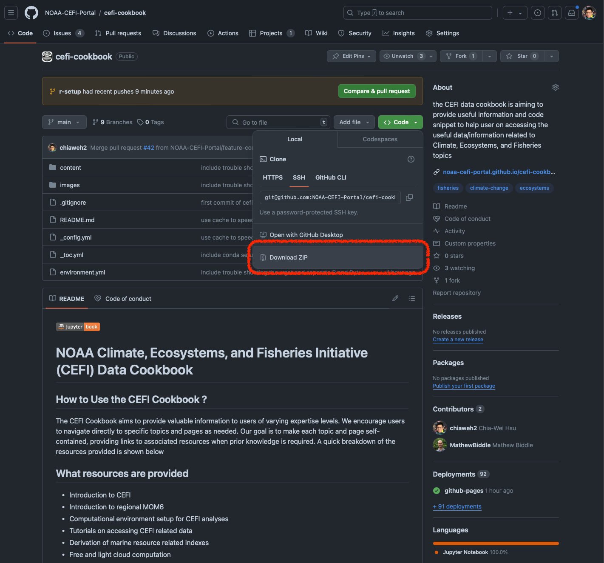

How to launch the JupyterLab locally#
Important
Sometime Binder or Colab just will not work due to the limited capacity and other factors. Setting up the local JupyterLab is the next best solution for running the cookbook content. Setting up the local environment give you the freedom of storing the changes and less waiting time on the computational resources.
This page is designed for users who want to setup a local JupyterLab interface. A install of the conda environment from the previous page is necessary to launch the JupyterLab interface.
Steps Summary#
Activate the conda environment
Launch the JupyterLab (for any project)
Launch the JupyterLab with cefi-cookbook locally
Activate the conda environment#
The is mentioned in the previous page. To activate the conda environment
conda activate cefi-cookbook
conda activate cefi-cookbook-r
Launch the JupyterLab#
After the conda environment is activated,
Go to the project top level (assuming the project directory is in my home directory)
cd ~/project1/
Launch the JupyterLab (make sure the “space” is between jupyter and lab)
jupyter lab
This will automatically launch the jupyterlab in a browser using the port 8888 if not used by other processes on your local computer.
Launch the JupyterLab with cefi-cookbook locally#
To use the local Jupyterlab to run the cookbook content, please download the entire GitHub repository by pressing the download zip file shown in the image
{kind=link}
Go to the cookbook download folder (Mac is default to ~/Downloads/)
cd ~/Downloads/cefi-cookbook-main/
Launch the JupyterLab (make sure the “space” is between jupyter and lab)
jupyter lab
This will automatically launch the jupyterlab in a browser with the left column showing all the cefi-cookbook-main contents

User can use the mouse to double click on the content directory to find any interesting jupyternotebook content with the file name “*.ipynb” and execute or modified the notebook content as needed.